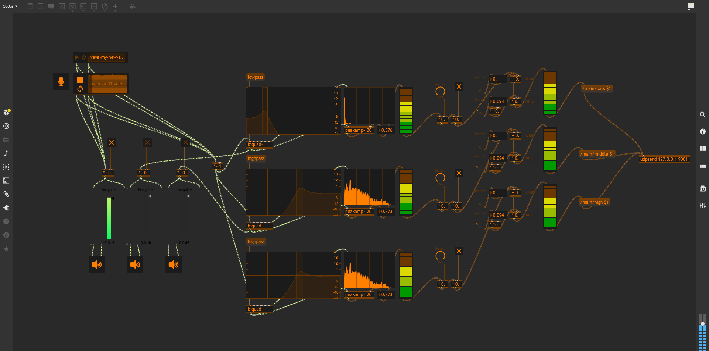
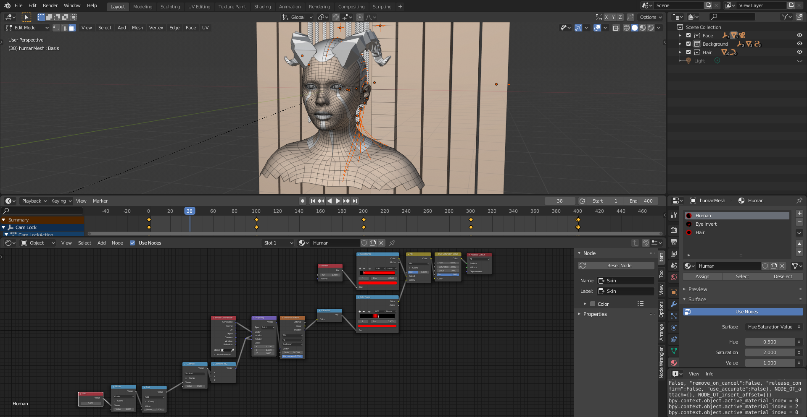

Le VJing est un terme large qui désigne la performance visuelle en temps réel. Les caractéristiques du VJing sont la création ou la manipulation de l'image en temps réel via la médiation technologique et en direction d'un public, en synchronisation avec la musique.
Mon objectif : Réaliser une performance visuelle live autonôme. Pour cela, je prévois d'utiliser le son en entrée et sortir des rendu 3D en temps réel. Tout cela automatiquement.
Pour réaliser mon projet, je vais me confronter à plusieurs difficultés :
Je vais essayer de détailler au maximum le développement du projet, nottamment les éléments qui m'ont mis en difficulté.
Dans cette première étape, je dois aménager une entrée audio. J'envisage donc de faire entrer le son à la manière d'un micro. Ainsi, un cohéquipier pourra m'envoyer du son par un port jack de mon ordinateur.

Une fois le son dans mon ordinateur, je dois en faire quelque chose. Je ne peux pas l'utiliser de façon brute. Pour cela, je vais utiliser le logiciel Max/MSP.
Ce logiciel me permet de lire le son entrant est d'en générer des variables numériques. Ces variables pourront être facilement interprétées par un programme.
Après avoir créé mes variables sur Max/MSP, j'ai dû les envoyer à Blender. Pour cela, j'ai recours à l'addon NodeOCS que j'ai ajouté à Blender.
Cet addon me permet de créer un serveur local sur lequel les logiciels pourrons envoyer et recevoir des informations. Néanmoins, je ne peux pas faire transiter beaucoup d'informations. J'aurai besoin de traiter les quelques valeurs reçues par Blender afin de les distribuer aux différents objets paramétrés.
Blender reçoit désormais des variables associées au son. Il ne me reste plus qu'à modéliser une scène. Concernant le paramétrage, il est très simple de modifier des matériaux et des modifiers grâce à des commandes en python.
J'ai remarqué que si l'on cherche à paramétrer beaucoup d'éléments, certains de ces éléments ne se mettait pas à jour. Pour palier à ce problème, j'ai du écrire un script dans Blender permettant de recevoir les informations communiqués par Max/MSP, puis de les distribuer au différents éléments paramétrés. Ce script se répète à chaque frame de l'animation (30Hz).
import bpy
# Assignation des objects controllés
object = bpy.data.objects['objectName']
def run_script(scene):
# --- BASS ---
bass = bpy.data.materials["receptionMaterial"].node_tree.nodes["Bass"].outputs[0].default_value
# ---
object.scale[0] = bass
# --- MIDDLE ---
middle = bpy.data.materials["receptionMaterial"].node_tree.nodes["Middle"].outputs[0].default_value
# ---
object.scale[1] = middle
# --- HIGH ---
high = bpy.data.materials["receptionMaterial"].node_tree.nodes["High"].outputs[0].default_value
# ---
object.scale[2] = high
# Lancer le script à chaque frame
bpy.app.handlers.frame_change_pre.append(run_script)